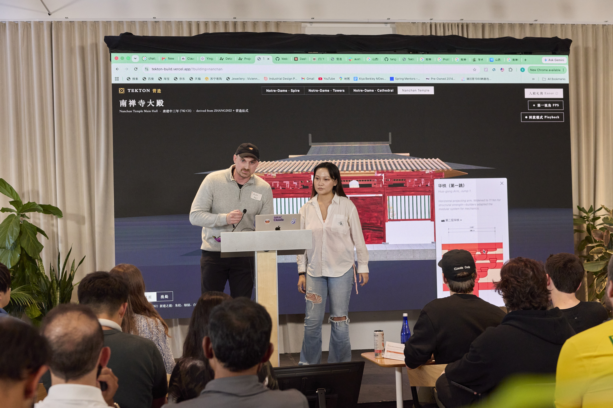
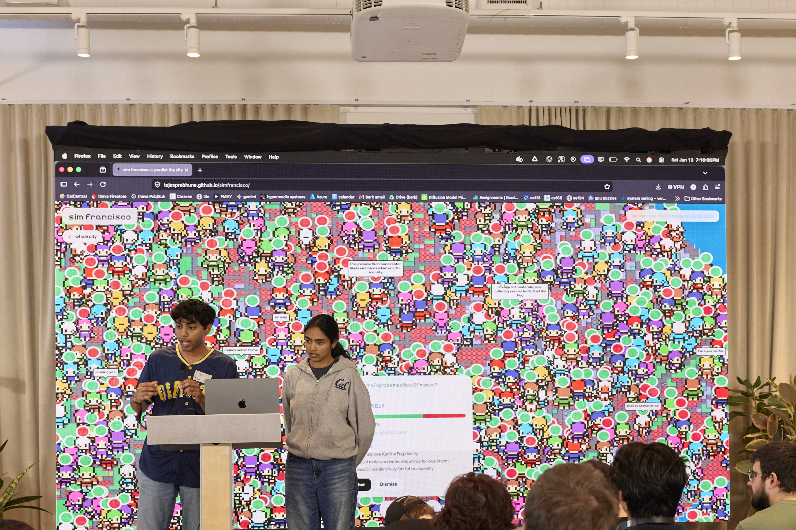
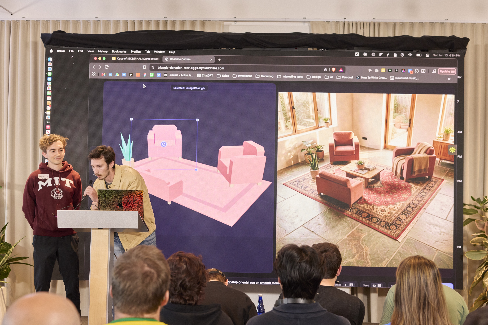

6월 13일, Anthropic은 300명이 넘는 창업자와 빌더를 샌프란시스코에 모아 Claude Opus 4.8과 함께하는 12시간 해커톤을 열었습니다. 1,500명 이상이 지원했고, 그중 310명이 참가했습니다. 상당수가 세계 곳곳에서 날아왔으며, 각자 500달러의 크레딧과 단 하루를 손에 쥐고 아이디어를 작동하는 데모로 바꿔냈습니다.
이번 행사에서는 Claude의 역량을 혁신적으로 활용한 세 우승팀이 무대에 올랐습니다.
제작: Holly Tang, Austin Burgess

Tekton은 당나라 건축을 되살리는 3D 복원 플랫폼으로, 모든 구성 요소를 역사적 출처까지 추적할 수 있습니다. 역사적 목조 건물이 불타면 수백 년의 장인 기술이 사라질 수 있습니다. Tekton은 그런 건물을 3D로 복원하고, 모든 조각을 문서화된 출처로 되짚어 갑니다.
이 플랫폼은 역사적 건물을 조사해 도면, 시공 문서, 사진, 다이어그램을 한데 모은 뒤, 339개의 단계적 시공 상태에 걸쳐 3D 모델을 조립합니다. 사용자가 어떤 구성 요소든 클릭하면, Tekton은 그 디테일이 어디에서 왔고 왜 그 자리에 놓였는지를 보여 줍니다. 팀은 이를 "원본 자료에서 검증된 모델까지 이어지는 증거 사슬(evidence chain)"이라 부릅니다.
검증은 전부 Opus 4.8 위에서 돌아갔습니다. 독립적인 검증자 서브에이전트가 격리된 컨텍스트 윈도에서 각 복원물을 채점했고, 자기 교정 루프가 20개 테스트를 모두 통과할 때까지 구성 요소 배치를 다시 확인했습니다.
디자이너인 Holly Tang은 단일 복원물을 프로토타이핑했고, Austin의 기여는 그것을 어떤 건물에도 처음부터 끝까지 작동하도록 확장한 것이었습니다. 두 사람은 한 달 전 Code with Claude 행사에서 만났으며, 박물관·역사학자·비영리단체·정부가 그 위에서 발전시킬 수 있도록 Tekton을 오픈소스로 공개하고자 했습니다.
제작: Tanmayi Priya Dasari, Tejas Prabhune

Sim Francisco는 미국 인구총조사 데이터에서 끌어온 1만 명의 합성 주민으로 이루어진, 샌프란시스코 인구의 작동하는 모델입니다. 각 주민은 저마다의 인구통계, 개인사, 세계관을 갖습니다. 질문이 주어지면 시스템은 합성 유권자 전체를 동네 단위로 여론조사합니다.
이 모델은 2024년 대통령 선거 득표를 민주당 81.3%로 예측했는데, 실제는 83.8%였습니다. 샌프란시스코의 2024년 3월 발의안 A(Prop A)는 70%로 예측해 실제 70.38%에 근접했습니다. Kalshi, Polymarket 같은 예측 시장도 몇 퍼센트포인트 이내로 따라갔습니다.
Opus 4.8은 프런트엔드와 백엔드 전체를 작성했고, 백엔드의 동작을 처음부터 끝까지 검증했습니다. 팀은 Claude가 검증자 에이전트, 적대적(adversarial) 에이전트와 나란히 작업하게 해, 도시의 실제 인구통계 분포를 재현하는 백엔드를 만들었습니다.
Tanmayi와 Tejas는 UC 버클리의 전기공학·컴퓨터과학 전공자로, 머신러닝 동아리에서 만났습니다. Tejas에게 Sim Francisco는 그가 세우고 있는 포스트트레이닝(post-training) 회사를 위한 시험대이기도 합니다.
제작: Jake Stevens, Mauricio Pereira

Custom Universe는 한 장의 휴대폰 사진을 완전히 편집 가능한 사실적 3D 장면으로 바꾸는 실시간 엔진입니다. 의자 사진을 한 장 찍으면, 시스템은 그것을 장면에 끌어다 놓고, 텍스트 프롬프트로 스타일을 바꾸고, 움직일 수 있는 3D 객체로 변환합니다. 그동안 렌더링된 이미지는 실시간으로 갱신됩니다.
이 프로젝트는 로봇공학 연구실을 겨냥합니다. 이들은 특정 작업과 환경에 맞춰 로봇을 훈련하기 위해 대량의 합성 데이터가 필요합니다. 연구실은 공장 바닥의 기계를 스캔해 장면에 넣고, 바로 그 환경에 맞춰 로봇 모델을 미세조정할 데이터를 생성할 수 있습니다.
Opus 4.8은 프로젝트를 처음부터 끝까지 구축했고, 해커톤 내내 원격 NVIDIA H100을 운용했습니다. 팀은 어떤 모델이 올바른 결과를 내는지 판별하는 데, 그리고 Apple의 RealityKit으로 촬영한 휴대폰 스캔 객체를 웹 앱으로 가져오는 파이프라인을 구축하는 데 Claude를 사용했습니다.
Jake는 로체스터 공과대학(RIT)의 컴퓨터비전 전공자로, AI 모델 속도 향상에 집중하는 스타트업 Luminal을 운영합니다. Mauricio는 MIT 로봇공학 졸업생으로 Coat Robotics를 운영합니다. Custom Universe는 오픈소스 모델과 알고리즘에 기반하며 무료로 사용할 수 있습니다.
안내: Sim Francisco는 선거 예측을 하나의 예시로 활용한 독립적인 해커톤 프로젝트입니다. 이는 AI로 시뮬레이션한 선거 예측을 하나의 활용 사례로 사용하는 것에 대한 Anthropic의 보증을 의미하지 않습니다.